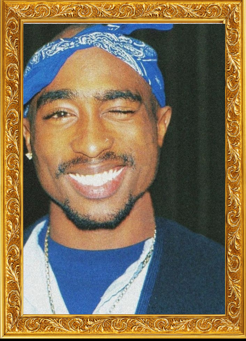

Tupac Shakur
Rapper Americano

Tupac Amaru Shakur
, mais conhecido como
2Pac
, foi um rapper, ator e ativista social norte-americano, considerado um dos maiores e mais influentes rappers de todos os tempos.
Veja os Álbuns dele😴
Site de Álbuns do 2Pac
Página 2